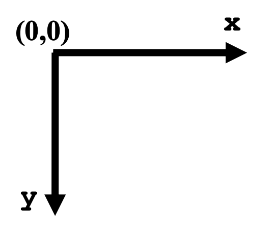
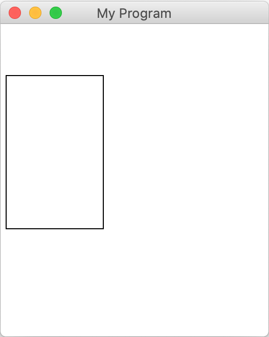
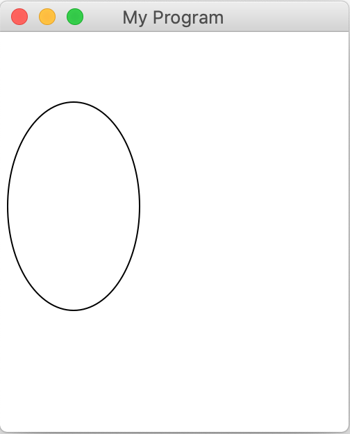
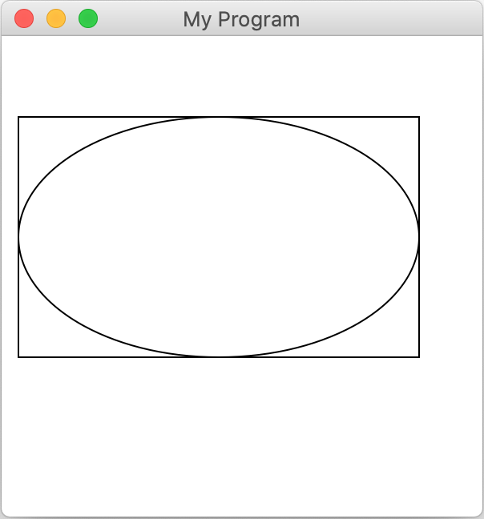
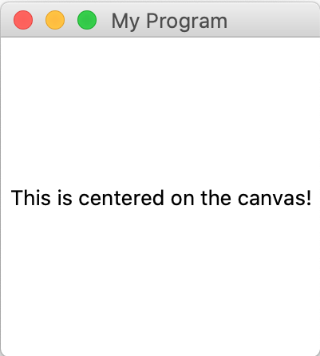
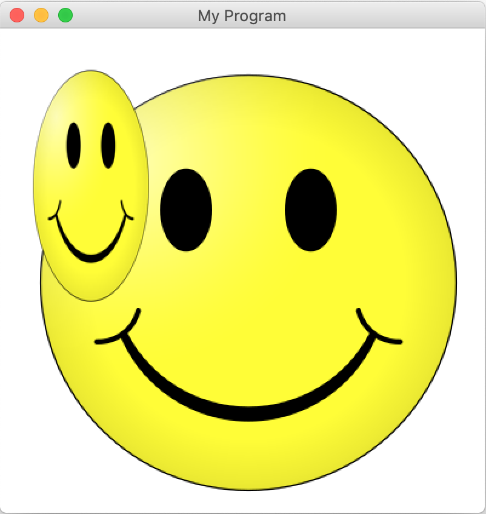
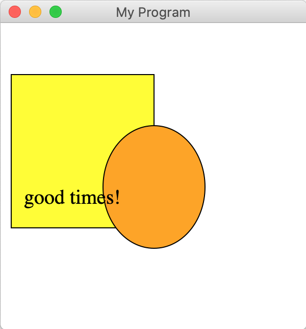
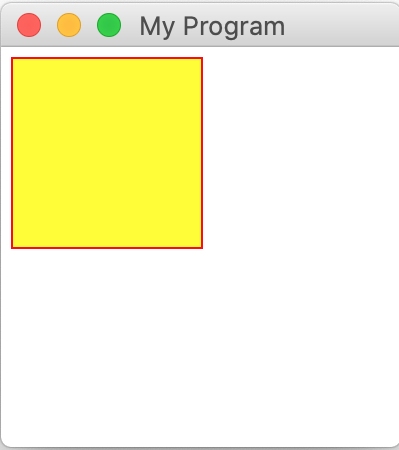

| Métodos | Descripción |
create_line(x1, y1, x2, y2) |
Crea una nueva línea conectando
(x1, y1) y (x2, y2). |
create_rectangle(x1, y1, x2, y2) |
Crea un nuevo rectángulo en el lienzo del tamaño del cuadro delimitador y lo retorna. |
create_oval(x1, y1, x2, y2) |
Crea un óvalo en el lienzo contenido dentro de su cuadro delimitador y lo retorna. |
create_image(x, y, filepath)--OR-- create_image_with_size(x, y, |
Crea una nueva imagen en el lienzo del archivo especificado. La esquina superior izquierda se ubicará en el punto (x, y). También puedes especificar la medida del ancho y alto de la imagen.
|
create_text(x, y, text) |
Crea texto en el lienzo con los contenidos especificados. El texto estará centrado en el punto (x, y). |
| Métodos | Descripción |
get_width(obj) |
Retorna el ancho de obj. |
get_height(obj) |
Retorna la altura de obj. |
get_left_x(obj) |
Retorna la coordenada x máxima hacia la izquierda de obj. |
get_top_y(obj) |
Retorna la coordenada y máxima que se encuentre en la parte superior de obj. |
move(obj, dx, dy) |
Mueve obj usando los desplazamientos dx y dy.
|
moveto(obj, x, y) |
Establece la ubicación de obj a las coordinadas especificadas. |
set_color(obj, color) |
Establece el contorno y llena el color (cuando sea aplicable) de obj. |
set_font(obj, font, size) |
Establece la fuente y tamaño de letra para el objeto de texto obj. |
delete(obj) |
Elimina obj del lienzo. |
| Métodos | Descripción |
get_canvas_width() |
Retorna el ancho del lienzo. |
get_canvas_height() |
Retorna la altura del lienzo. |
Una de las librerías más comunes para hacer gráficas en Python se llama Tk (abreviatura de "tkinter"). Tk es una librería de gráficas muy poderosa que debería estar instalada por defecto para Windows y para Mac cuando se instala Python. Algunas de las funciones que incluye son difíciles de usar. Por esta razón, les suministramos nuestra propia mini versión de librería gráfica que está escrita encima de Tk y que es más fácil de usar. Sin embargo, no es un reemplazo para Tk - solo añade nuevas funciones para hacer ciertas acciones, como dibujar, más sencillas. ¡Siempre puedes explorar la librería completa de Tk si estás interesado en ver qué más hace!
Para utilizar nuestra librería gráfica primero debes importarla al comienzo de tu programa, así:
from graphics import Canvas
El modelo gráfico para la librería de gráficas es un "lienzo" (como el de una pintura) donde vas a dibujar varias figuras. El lienzo es una cuadrícula de píxeles que tienen valores x y y. La coordenada (0,0) está en la esquina superior izquierda del lienzo. Los valores de x se incrementan a medida que te mueves hacia la derecha. Los valores de y se incrementan a medida que te mueves hacia abajo. En otras palabras, puedes imaginarte el lienzo como se muestra a continuación:

Cuando queremos dibujar figuras en un lienzo, llamamos funciones sobre ese lienzo que "crean" la figura que queremos dibujar. Estas figuras luego aparecen en el lienzo. Generalmente vamos a darte el código para crear el lienzo por ti, entonces lo único por lo que te tienes que preocupar es por agregar figuras al lienzo. Para lo que queda de este documento, vamos a asumir que la variable llamada canvas ya ha sido creada y que representa el lienzo en el que vas a dibujar. Normalmente esto se hará con el siguiente código:
canvas = Canvas() # crear un nuevo lienzo
canvas.set_canvas_title("My Program") # establece el texto como título de la ventana
# ¡Ahora podemos usar nuestro lienzo aquí!
...
# llama esto al final del programa para asegurarte de que la ventana se muestra correctamente
canvas.mainloop()
A continuación encontrarás un pequeño tour por las diferentes figuras que puedes dibujar en el lienzo e igualmente resaltar algunas de las opciones que tienes respecto a cómo estas figuras se ven. Para una lista completa de instrucciones, mira el vínculo en la parte superior de esta página que lleva a la documentación completa.
Para dibujar líneas en el canvas, usa create_line y especifica las coordenadas para los puntos incial y final de la línea. Por ejemplo, el siguiente comando dibujaría una línea desde la coordenada (ubicación) (10,20) a la (100,50) en el lienzo:
canvas.create_line(10, 20, 100, 50)
Por defecto, todas las líneas serán negras.
Para dibujar un rectángulo en el lienzo, usa create_rectangle y especifica las coordenadas para la esquina superior izquierda y la esquina inferior derecha. Por ejemplo, el siguiente comando dibujaría un rectángulo con la esquina superior izquierda en (5,50) y la esquina inferior derecha en (100,200) en el lienzo:
canvas.create_rectangle(5, 50, 100, 200)
Por defecto, todos los rectángulos son dibujados sin relleno y con borde negro. Esto es lo que el código dibujará en el lienzo:

Para dibujar un óvalo en el lienzo, use create_oval y especifique las coordenadas para la esquina superior izquierda y esquina inferior derecha del cuadro delimitador que contiene el óvalo que desea dibujar. En otras palabras, la parte superior, inferior, derecha, e izquierda del óvalo dibujado tocarán los lados del cuadro delimitador especificado. Por ejemplo, el siguiente comando dibujaría el óvalo que cabe en un rectángulo imaginario con esquina superior izquierda en (5, 50) y esquina inferior derecha en (100, 200) en el lienzo:
canvas.create_oval(5, 50, 100, 200)
Por defecto, todos los óvalos se dibujan sin llenar y con borde negro. A continuación, se presenta lo que el código anterior dibujaría en el lienzo - note que se podría pensar en esto como un cuadro imaginario desde (5, 50) hasta (100, 200) con un óvalo dibujado en su interior:

Para aclarar el concepto de un cuadro delimitador, debajo se dibujó un óvalo con un rectángulo de borde, donde tanto el óvalo como el rectángulo tienen las mismas coordenadas de cuadro delimitador:
canvas.create_rectangle(10, 50, 260, 200)
canvas.create_oval(10, 50, 260, 200)

Para dibujar texto en el lienzo, use ‘create_text’ y especifique la coordenada para el centro de la etiqueta de texto. Por ejemplo, el siguiente comando añadirá texto al lienzo mostrando “Hola, mundo!” centrado en (50,50)
canvas.create_text(50, 50, "Hola, mundo!")
Tenga en cuenta que mientras otros objetos gráficos suelen utilizar su esquina superior izquierda como posición, el texto utiliza su punto central. Esto se debe a que a menudo deseamos centrar el texto, por ejemplo, en el centro de la pantalla. Podemos hacerlo fácilmente utilizando las dimensiones del lienzo:
canvas.create_text(canvas.get_canvas_width() / 2,
canvas.get_canvas_height() / 2,
"Esto está centrado en el lienzo!")
Por defecto, todo el texto es dibujado en negro en la fuente del sistema. Esto es lo que este código para dibujar una etiqueta de texto centrada dibujaría en el lienzo:

Si lo desea, puedes cambiar el tipo de fuente del texto usando set_font, como se muestra a continuación:
label = canvas.create_text(100, 100, "Hola, mundo!")
canvas.set_font(label, "Times", 25)
Nota: Si las imágenes no funcionan en tu programa y no aparece ningún error, es posible que no tenga instalada la librería necesaria para que las fotos funcionen. De ser así asegúrese de seguir las siguientes instrucciones: (../../en/resources/install.html) en la sección “Installing Graphics”
Puede añadir imágenes a tu lienzo. Para hacerlo debe usar create_image (si quiere que la imagen tenga la misma resolución que el archivo) de lo contrario debe usar create_image_with_size para especificar el tamaño de la imagen. Independientemente de la función usada debe especificar la posición en x y y de la esquina superior izquierda de la imagen para insertarla en el lienzo y el nombre de la imagen. Adicionalmente create_image_with_size necesita el alto y el ancho que tomará la imagen. A continuación, se muestra un ejemplo que añade una imagen de una “carita feliz” con la esquina superior derecha en las coordenadas (25, 30) y asumiendo que tenemos un archivo llamado “smiley.png” en nuestra carpeta del proyecto de PyCharm:
canvas.create_image(25, 30, "smiley.png")
# or add with specific dimensions width = 100, height = 200
canvas.create_image_with_size(25, 30, 100, 200, "smiley.png")
Este es el resultado que el código anterior dibujaría en el lienzo. Nótese que la carita feliz más grande es la insertada con la función create_image y la imagen distorsionada es la que tiene tamaño 100x200 y fue insertada con la función create_image_with_size.

Cabe resaltar que las imágenes no pueden cambiar de tamaño después de haber sido creadas. Imagen de “Smiley” recuperada de https://simple.wikipedia.org/wiki/Smiley
Puedes remover objetos de los lienzos usando delete:
rect = canvas.create_rectangle(100, 200, 300, 400)
...
canvas.delete(rect)
Note que se borra un objeto permanentemente - si quiere que un objeto se oculte temporalmente es mejor utilizar la función set_hidden. Puede pasar como parámetro el valor de True (verdadero) o False (falso) para ocultar o hacer visible un objeto respectivamente.
rect = canvas.create_rectangle(100, 200, 300, 400)
canvas.set_hidden(rect, True) # No es visible
...
canvas.set_hidden(rect, False) #Es visible
Los objetos se dibujan en el canvas en el orden en que fueron creados por su código. Entonces, si dibuja un rectángulo rojo después de un círculo amarillo, el rectángulo rojo puede potencialmente cubrir (ocluir) parte del círculo amarillo. Esto a veces se denomina el orden z de los objetos.
Como ejemplo, primero dibujamos un rectángulo amarillo, luego dibujamos un óvalo naranja (que se superpone parcialmente al rectángulo) y luego algo de texto (que está encima del rectángulo y el óvalo).
rect = canvas.create_rectangle(10, 50, 150, 200)
canvas.set_fill_color(rect, 'yellow')
oval = canvas.create_oval(100, 100, 200, 220)
canvas.set_fill_color(oval, 'orange')
label = canvas.create_text(70, 170, '¡Buenos tiempos!')
canvas.set_font(label, "Times", 20)

Para todos los objetos gráficos, puede solicitar al canvas información sobre ellos. Por ejemplo, puedes obtener sus dimensiones a través de ‘get_width’ y ‘get_height’:
rect = canvas.create_rectangle(0, 0, 50, 100)
print(canvas.get_width(rect)) # prints 50
print(canvas.get_height(rect)) # prints 100
You can also ask the canvas for information about their location. Specifically, you can get the leftmost x coordinate of the object, or the topmost y coordinate:
oval = canvas.create_oval(5, 10, 50, 100)
print(canvas.get_left_x(oval)) # prints 5
print(canvas.get_top_y(oval)) # prints 10
Note que para un objeto como un óvalo, los parámetros de las dimensiones y la esquina izquierda de referencia son del rectángulo que contiene dicho óvalo.
Existen varias funciones útiles para actualizar el estado de diferentes objetos gráficos.
Puede cambiar la posición de un objeto utilizando la función moveto. Se especifican las nuevas coordenadas de la esquina superior izquierda del contenedor del objeto (ej.: el contenedor para un óvalo, el contenedor para una línea, etc.). A continuación, se muestra como se puede mover un rectángulo a la posición (25, 50) tomando como punto de referencia su esquina superior izquierda.
rect = canvas.create_rectangle(100, 200, 300, 400)
canvas.moveto(rect, 25, 50)
También se puede cambiar la posición de un objeto especificando que tanto desea que se mueva el objeto en vez de decir cual es su nueva posición. La función move le permite especificar el cambio en x y el cambio en y del objeto. Por ejemplo, a continuación se muestra como se puede mover un rectángulo 5 píxeles hacia la derecha y 10 píxeles hacia abajo:
rect = canvas.create_rectangle(100, 200, 300, 400)
canvas.move(rect, 5, 10)
Por lo tanto, la nueva coordenada de la referencia superior izquierda del rectángulo será (105, 210).
You can change the colors of various objects, both their outline and their fill. Objects like rectangles and ovals have both - their outline is the border around the shape, and their fill is the inside of the shape. Lines have just a fill - it's the color of the line. Text also has just a fill - it's the color of the text. Images have neither a fill nor an outline. You can change the fill color for relevant objects using set_fill_color, and the outline color using set_outline_color. For instance, here's how we could make a rectangle with a red outline and yellow fill:
rect = canvas.create_rectangle(5, 5, 100, 100)
canvas.set_outline_color(rect, 'red')
canvas.set_fill_color(rect, 'yellow')
Así es como se debería ver dentro del lienzo (canvas):

Si pasas un ‘string’ vacío para el parámetro del color, creará una forma que no tenga ningún relleno ni ningún borde.
rect = canvas.create_rectangle(100, 200, 300, 400)
canvas.set_outline_color(rect, '') # no outline
canvas.set_fill_color(rect, 'yellow') # yellow fill
Frecuentemente queremos establecer ambos colores al mismo tiempo. Para esto, podemos utilizar set_color. Esto establece tanto el relleno como el borde de la figura al color especificado. Incluso puedes usar set_colorpara figuras que no tienen ninguno de esos - por ejemplo, el texto solo tiene color de relleno, pero puedes utilizar set_color igualmente. Por lo tanto, la mayoría del tiempo set_color es todo lo que necesitas. Sin embargo, si necesitas ser más específico, puedes usar set_outline_color (el borde) o set_fill_color (el relleno).
Hay muchos colores diferentes disponibles - para una lista completa, [mira esta página] (https://www.tcl.tk/man/tcl8.6/TkCmd/colors.htm)
Puedes obtener el largo y el ancho del canvas en sí utilizando get_canvas_width (ancho) y get_canvas_height(largo):
canvas_width = canvas.get_canvas_width()
canvas_height = canvas.get_canvas_height()
# Crear texto centrado
label = canvas.create_text(canvas_width / 2, canvas_height / 2, "I'm centered!")